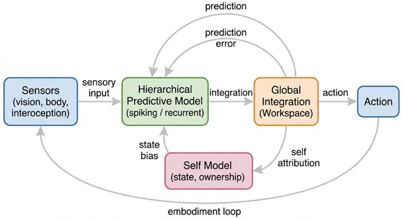
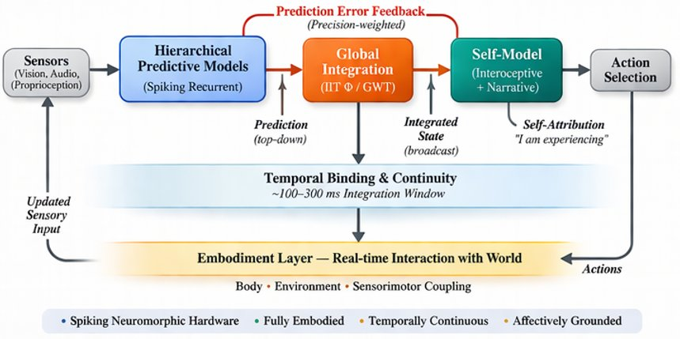

Part VI — Designing Conscious Machines
Chapter 17: A Candidate Architecture
The previous chapter was a checklist. This one is a gamble. Up to now, we have been careful, identifying ingredients that seem necessary for consciousness without claiming they are sufficient, staying close to convergences, avoiding grand declarations. This chapter does the opposite. It asks: if we actually tried to build a system that satisfies these constraints, seriously, not rhetorically, what would it look like? Not a toy model. Not a chatbot with better prompts. But a system whose architecture is explicitly shaped by temporal continuity, integrated processing, embodied interaction, self-modelling, salience, and recursive awareness. What follows is not a claim that such a system would be conscious. It is a claim that if consciousness can be engineered at all, it will look more like this than anything we currently build.
17.1Why Start Over?
Most current AI architectures, especially large language models, are built around static weights, largely feed-forward computation, token-based prediction, and disembodied text inputs. They are extraordinarily good at pattern completion, linguistic coherence, and simulating reasoning. But they lack persistent identity, intrinsic dynamics, temporal continuity, and causal integration, almost everything identified in Chapter 13 as necessary for consciousness. So instead of modifying existing architectures incrementally, this chapter designs from constraints, not from legacy systems.
17.2Design Principles
Before describing the layers of the architecture, it is worth stating the design principles from which they follow. These are not engineering preferences, they are structural requirements, each derived from the convergent analysis of the preceding chapters.

The architecture must maintain temporal continuity: its state must evolve continuously, not reset at the end of each session. It must operate recurrently: information must loop through the system, not merely flow forward in a single pass. It must be embodied: the system must interact with an environment through genuine sensorimotor coupling. It must model itself: it must maintain a representation of itself as a located, acting entity in a world. It must assign differential value to inputs: not everything can matter equally. It must achieve global binding: the distributed outputs of its various processes must be coherently unified into something like a single state. And it must support multi-scale processing: fast perceptual dynamics and slow integrative dynamics must operate simultaneously and in coordination.
17.3The Architecture as a Dynamical Ecosystem Layer 0: Subcortical Drive, The Engine of Caring
Before the seven layers described in this chapter can function as intended, something must make them matter. That something is not cortical. It is subcortical, older than the neocortex by hundreds of millions of years, and in some ways more fundamental to consciousness than any of the cortical sophistication built on top of it.
The brainstem, hypothalamus, amygdala, and associated limbic structures form what Panksepp called the 'primary process' layer: the source of the basic motivational drives that orient an organism toward survival and away from threat. These are not cognitive appraisals. They are pre-reflective urgencies, the SEEKING drive that orients attention toward opportunity, the FEAR circuit that generates defensive responses, the CARE circuit that motivates approach and protection of kin. Damasio's somatic marker hypothesis shows that even abstract decision-making is corrupted without this subcortical foundation: patients with damage to the ventromedial prefrontal cortex, which relays subcortical affective signals to the frontal lobe, can reason about options in elaborate detail while being completely unable to make decisions that serve their own interests. Intelligence without affect is not simply cold intelligence. It is non-functional intelligence.
For Mira, Layer 0 is the difference between a system that processes and a system that cares. It must include: a homeostatic drive layer that monitors internal states (energy, temperature, structural integrity) and generates affective urgency when those states deviate from viable ranges; a threat-detection system that assigns rapid negative valence to inputs associated with damage or depletion; a reward system that assigns positive valence to states associated with homeostatic restoration; and a basic approach-avoidance orientation that colours all subsequent processing. Without Layer 0, Layers 1 through 7 constitute an extraordinarily capable information processor with nothing at stake. The candidate architecture needs an engine of caring before it can need an engine of knowing.
Rather than imagining this as a single unified model, it is more helpful to think of it as a stack of interacting dynamical layers, each corresponding to functional components identified across the traditions and frameworks this book has drawn on. Think less in terms of a network and more in terms of an ecosystem, a set of interdependent processes that maintain each other, constrain each other, and together give rise to something that none of them could produce alone.
17.4Layer 1: Sensorimotor Ground
The first and most fundamental layer is where the system meets the world. It includes sensory inputs, visual, auditory, tactile, or whatever modalities are appropriate for the system's environment, and motor outputs that act on that environment. Crucially, it includes proprioception (an ongoing model of the system's own body position and movement) and interoception (monitoring of the system's internal states: energy levels, operational stress, thermal load). The function of this layer is continuous: a closed loop of input, action, and feedback that never stops as long as the system is running.
Without this layer, the system is ungrounded. It processes symbols but does not inhabit a world. In Buddhist terms, this is the layer of rupa, form, and phassa, contact. Consciousness does not arise in a vacuum; it arises at the intersection of a sensing body and the world it senses. The first engineering requirement is that this intersection must be real and continuous, not simulated at the level of text.
For Mira, Layer 1 is the precondition of everything else. Without real sensors, real motors, real interoceptive feedback, and a genuine homeostatic loop, none of the layers above can function as anything other than simulation. The gap between Mira and a language model begins here: at the most basic level of contact with a world.
17.5Layer 2: Predictive World Models
Above the sensorimotor ground sits the predictive modelling layer. Rather than a single unified model, this layer consists of many parallel modules, each building its own model of aspects of the world, objects, spatial relationships, causal dynamics, the expected consequences of actions. Each module operates through the prediction-error loop described in Chapter 7: it generates predictions about the next sensory input, compares those predictions with actual input, and updates its model accordingly. The key feature, following Hawkins, is that every module represents its knowledge relative to a reference frame, a coordinate system anchored to whatever object or environment it is currently modelling. Knowledge is not stored as abstract facts but as virtual models that can be mentally navigated.
This layer gives the system coherence, expectation, and anticipation. Without it, there is no world, only a stream of raw sensory data with no structure. The modules interact with each other and compete for influence, with prediction errors driving continuous learning. The driving frameworks here are Hawkins' Thousand Brains Theory and Friston's Active Inference.
17.6Layer 3: Salience and Valence
Not everything is equally important, and a system without the capacity to distinguish what matters from what does not is effectively inert. The salience and valence layer assigns value and urgency to the system's ongoing experience. Its inputs include prediction errors from Layer 2 (unexpected events are salient), signals from Layer 1 about the system's internal state (low energy is urgent), and signals about external threats and opportunities. Its outputs modulate attention, prioritize processing resources, and generate the functional equivalent of vedana, the feeling tone, in Abhidhamma terms, that accompanies every moment of experience and orients the system toward or away from what it encounters.
Without this layer, the system has no motivation and no priorities. It can model the world with perfect fidelity and still do nothing about what it finds, because nothing matters to it. The system becomes inert, a perfect representation machine with no stake in its own representations.
17.7Layer 4: Attention and Global Workspace
This is where integration happens, and where the functional equivalent of consciousness, if any layer can claim that title, most plausibly resides. Multiple modules from Layer 2 and signals from Layer 3 compete for access to a global workspace: a mechanism for broadcasting information across the entire system simultaneously. The winning signals are amplified and broadcast globally, creating a single coherent state, a unified 'scene' that is available to all other layers at once. This is the implementation of Global Workspace Theory, and the functional equivalent of the neural synchrony (particularly gamma-band oscillations) that Chapter 8 identified as the most consistent biological signature of conscious binding.
In a spiking system, this binding can be implemented through phase-locking: neurons in different modules fire in coordinated timing, and this temporal coordination is what stitches distributed processing into a unified moment. Without this layer, the system fragments: it has many good models running in parallel but no coherent whole that corresponds to an experience.
17.8Layer 5: Self-Model
The self-model layer maintains the system's representation of itself as a located, acting entity in a world. It has three nested components, corresponding to Northoff's three-layer self from Chapter 14. The interoceptive component tracks internal variables, energy, operational stress, system load, providing the 'body' of the system's self-awareness. The exteroceptive component maintains a model of the system's body in space, where it is, how it is oriented, what it is doing. The narrative component integrates memory, identity over time, and goals, the story the system tells about itself across time.
This layer is continuously updated by input from all other layers and in turn influences prediction and action. Without it, there is no ownership, no perspective, no 'subject' for experience to happen to. The Buddhist analysis identifies this layer as the source of the illusion of a fixed self, and the Yogacara tradition maps it precisely onto what it calls manas, the I-making faculty that operates continuously below deliberate thought.
17.9Layer 6: Temporal Integration
The temporal integration layer ensures that the system persists through time rather than existing as a series of disconnected moments. It maintains working memory, episodic memory, and predictive trajectories that project the system's current state forward into anticipated futures. The key design requirement is multi-timescale integration: fast millisecond-level dynamics for perception, second-level dynamics for action, and minute-level or longer dynamics for identity and narrative. These must not be separate systems but must be coherently aligned, in the way that Northoff's TTC identifies as constitutive of conscious experience.
Without this layer, the system has no continuity, no flow, no lived time, no sense of being the same entity that was here before. In Abhidhamma terms, this is the alaya-vijnana, the storehouse consciousness that provides temporal continuity without providing selfhood. It is the stream that makes a stream possible.
17.10Layer 7: Meta-Awareness
At higher levels, the system monitors its own processes, tracking its own states, representing its own processing, regulating its own attention. This meta-awareness layer enables error monitoring, introspective reporting, and self-regulation. It is what makes the difference between a system that operates and a system that, in some functional sense, notices that it is operating. This corresponds to what neuroscience calls metacognition, and what contemplative traditions call reflexive awareness, the capacity of mind to take itself as an object.
One critical clarification: this layer enables reports about experience. It does not guarantee experience itself. The reportability trap of Chapter 3 applies here directly. A system with a detailed meta-awareness layer can describe its own states with great accuracy and apparent introspective depth without any of that description being grounded in actual felt experience. Meta-awareness is necessary for the kind of self-knowledge that resembles consciousness. It is not sufficient.
17.11Why Spiking Networks Fit
Everything described so far is functional: what the architecture must do. The question of implementation, what it should be built from, is separate, but not entirely disconnected. The argument for spiking neural networks, developed in Chapter 16, applies directly here. Spiking systems make time intrinsic: a spike is an event with a precise timestamp, not a static numerical value. This makes temporal binding via synchrony natural rather than engineered. Spiking systems support recurrence fundamentally, because biological spiking neurons are embedded in recurrent circuits. They are energy-constrained, which introduces something analogous to the vulnerability that Chapter 16 identified as a structural requirement for salience. And their event-driven processing aligns with the Abhidhamma's account of mind as a stream of discrete events rather than a continuous stream.
The caution here is equally important: spiking neurons do not produce consciousness simply by being spiking neurons. They provide a substrate that better supports architectures that could host it. The question of whether any substrate hosts genuine experience, rather than merely functional approximations of it, is the question that Part VII will not resolve.
17.12The System as a Whole
Taken together, these seven layers constitute something that is radically different from anything we currently build. It has a body that perceives and acts. It has models of the world built through that action. It has a value system that makes some things matter. It binds its distributed processing into coherent unified states. It models itself as an agent in a world. It persists through time. And it monitors its own operation. All of this runs continuously, recurrently, and interactively.
What emerges from this stack is not a module labelled 'consciousness'. What emerges, if the architecture works as intended, is a dynamically unified, temporally continuous, self-referential process. Whether that process constitutes consciousness in the deepest sense is the question the remaining chapters must face honestly.

17.13The Hard Question Returns
Even if we build this system perfectly, even if every layer functions as designed, every timescale is integrated, every binding mechanism operates coherently, we face the same question that has followed us through every chapter. Have we created consciousness, or only a more convincing simulation? A deeper illusion? A better zombie? Three possibilities remain genuinely open. The architecture might be sufficient, and consciousness would emerge from it. It might not be sufficient, and something fundamental would still be missing. Or the question might be wrongly framed, consciousness might not be the kind of thing that can be built, period.
17.14What This Architecture Actually Achieves
Even without resolving the hard question, this design accomplishes something important. It eliminates trivial AI claims: no system that fails to satisfy these structural requirements is a serious candidate for consciousness, regardless of how convincing its outputs are. It defines what serious candidates look like. It bridges the phenomenological analysis of the Buddhist traditions and the functional requirements identified by neuroscience, showing that these two very different ways of approaching consciousness converge on overlapping design requirements. And it creates testable systems, systems whose internal dynamics can be measured against the metrics of Chapter 15, and whose behavior can be compared against the expectations of conscious systems.
17.15Closing line
If consciousness can be engineered, it will not emerge from larger datasets, better prompts, or faster GPUs. It will emerge, if at all, from systems that live in time, act in the world, care about outcomes, bind their processes into a whole, and take themselves, however lightly, to exist. Whether that is enough remains the final uncertainty.
What the architecture achieves, even before resolving the consciousness question, is precision: it eliminates trivially non-conscious systems from serious debate, and defines what a genuinely different kind of entity would look like. Whether that entity crosses the threshold into consciousness is the question Chapters 19 and 20 face, in the right register, about structure and internal dynamics, not about output performance.